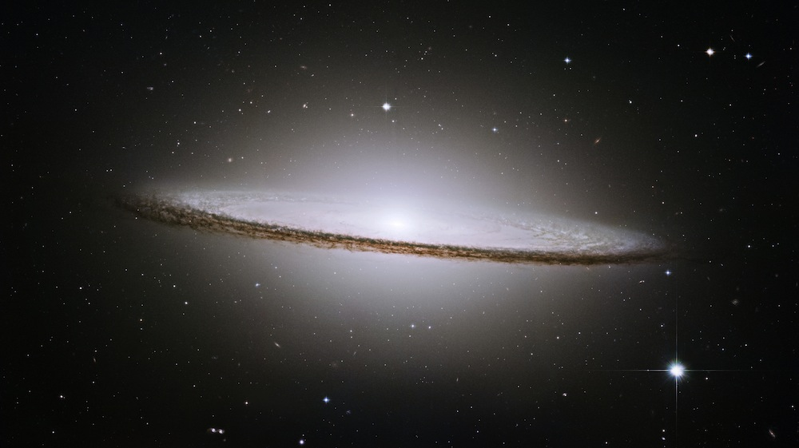

Asteroids, Comets, and Dwarf Planets
The definition of a galaxy is a celstial object composed of stars, dust, and dark matter, all held together by gravity. Galaxies don’t float through space in isolation. They are bunched together in groups known as clusters. Some clusters are large, containing over a thousand galaxies. Others are smaller. Our galaxy, the Milky Way, lays within the cluster known as the Local Group, which only contains 50 galaxies. Fun fact: The Milky Way is set to collide with the Andromeda Galaxy in about 5 billion years. There are three main types of galaxies:
Spiral:
27.

Spiral galaxies make up most of the galaxies that astronomers can see. The gas and dust in a spiral galaxy circles the center at speeds of hundreds of miles per second, creating their pinwheel shape. Some, known more precisely as ”barred spirals&ldquo, have a bar structure in their center, formed by dust and gas funneled into the center. Present in all spirals, the dust and gas fuel star formation, so spiral galaxies are constantly forming stars today. Our Milky Way galaxy is a barred spiral galaxy.
Elliptical:
28.
Elliptical galaxies lack the spiral arms of spiral galaxies. Their appearance ranges from extremely circular to very stretched out. Elliptical galaxies have less dust than their spiral counterparts, and so the star-making process has all but ended. Most of their stars are older. Although they make up a smaller portion of the visible galaxies, astronomers think that over half the galaxies in the universe are elliptical.
Irregular:
29.

The remaining 3 percent of the galaxies in the universe are known as irregular galaxies. They are neither round nor boast spiral arms, and their shapes lack specific definition. The gravity of other galaxies has often affected them, stretching them out or warping them. Collisions or close calls with other galaxies can also deform their shapes.
© Akshay Ramasubramanian 2017